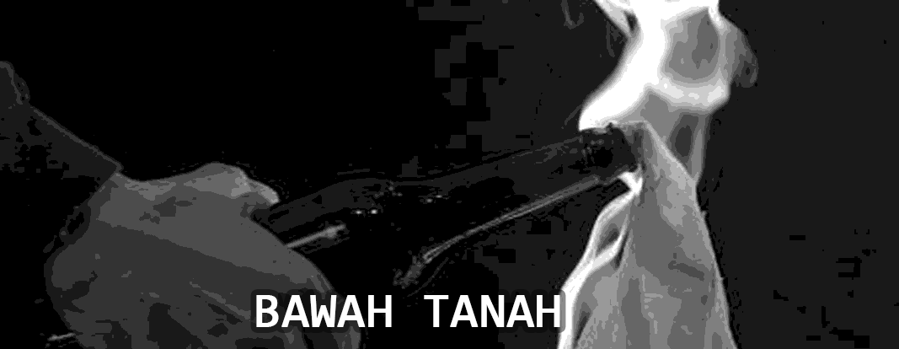
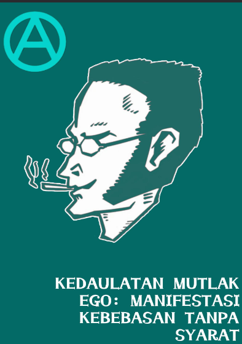

Bawah Tanah No State.
Publikasi: 2026

IND: #1-Kedaulatan Mutlak Ego-2026
Kedaulatan Mutlak Ego:
Manifestasi Kebebasan Tanpa Syarat
Pembuat: Black Faceless
Tahun Publikasi: 2026
Inspirasi Utama: Buku ini lahir dari sintesis pemikiran tokoh-tokoh egois, nihilis, dan
anarkis individualis:
Max Stirner - Melalui magnum opus-nya, Der Einzige und sein Eigentum (Sang Diri
dan Miliknya). Pemikirannya menghancurkan "hantu-hantu" abstraksi sosial seperti
negara, moralitas, dan kemanusiaan.
Renzo Novatore - Melalui artikel dan esai pemberontakannya seperti Toward the
Creative Nothing (Menuju Ketiadaan Kreatif). Pemikirannya membawa egoisme ke
dalam bentuk ikonoklasme puitis yang agresif.